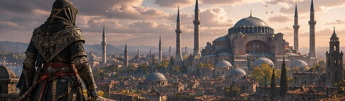

Protagonista
Ezio Auditore
Un Asesino experimentado que busca comprender el legado de sus predecesores.
En la última gran aventura de Ezio, el viaje conduce a Constantinopla en busca de respuestas sobre Altaïr y el legado de la Hermandad. El pasado y el presente se entrelazan en una historia de memoria, conocimiento y despedida.
En la última gran aventura de Ezio, el viaje conduce a Constantinopla en busca de respuestas sobre Altaïr y el legado de la Hermandad. El pasado y el presente se entrelazan en una historia de memoria, conocimiento y despedida.
Este dossier reúne los personajes, el contexto histórico, los lugares y las actividades que definen esta entrega. La información está organizada para descubrir el juego sin perderse entre sus distintas capas.
Las figuras que dan forma a la historia de Assassin’s Creed Revelations.

Un Asesino experimentado que busca comprender el legado de sus predecesores.
Sus recuerdos y decisiones forman una parte esencial del viaje.
Librera veneciana que ayuda a Ezio y se convierte en una persona importante para él.
Líder de los Asesinos de Constantinopla y guía en la ciudad.
Constantinopla · 1511–1512 · Una recreación histórica que combina acontecimientos reales y ficción.
Ezio llega a Constantinopla para encontrar las llaves que permiten acceder a los recuerdos de Altaïr. Mientras se implica en las tensiones entre facciones de la ciudad, descubre una historia que conecta generaciones de Asesinos.
Regiones, ciudades y escenarios que dan personalidad a esta aventura.
Una metrópolis entre Europa y Asia, llena de mercados y monumentos.
Región subterránea y rocosa que alberga una secuencia importante.
La fortaleza ancestral de la Hermandad, vinculada a los recuerdos de Altaïr.
Los sistemas principales que definen la forma de jugar esta entrega.
Facilita desplazamientos, escaladas y acciones sobre enemigos.
Fabricar y combinar bombas con distintos efectos tácticos.
Proteger posiciones de la Hermandad frente a ataques templarios.
Enviar Asesinos a encargos para ganar experiencia y recursos.
Desbloquear secuencias que revelan momentos de su vida.
Detectar rastros y anticipar movimientos en determinadas situaciones.
Qué hacemos durante la aventura, cómo exploramos el mundo y qué sistemas conviene dominar.
Explorar Constantinopla, sincronizar atalayas, recuperar páginas y llaves, ayudar a los Asesinos locales, descubrir accesos subterráneos y reunir recursos para fabricar bombas y fortalecer la Hermandad.
Detalles y sistemas especiales que merece la pena descubrir durante la exploración.
Las llaves de Masyaf desbloquean recuerdos jugables de Altaïr.
Las misiones de Desmond en el Animus exploran fragmentos de su memoria.
La fabricación de bombas permite experimentar con combinaciones de carcasa, pólvora y contenido.
ARCHIVO EN AMPLIACIÓN · Se añadirán ubicaciones concretas y capturas propias a medida que se complete la documentación de cada juego.
Cerró la trilogía de Ezio y conectó de forma directa su historia con la de Altaïr, dando un cierre emocional a ambos personajes.